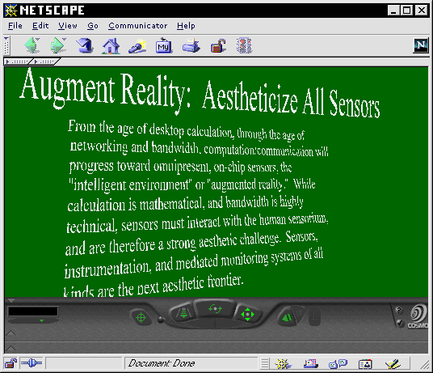
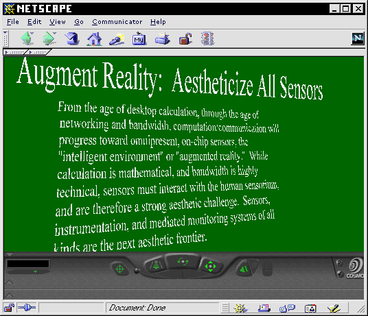

Viridian Principles in VRML.  back to the VRML site. designed by joel westerberg Back to Viridian index at Unsafe

back to the VRML site.
designed by joel westerberg
Back to Viridian index at Unsafe